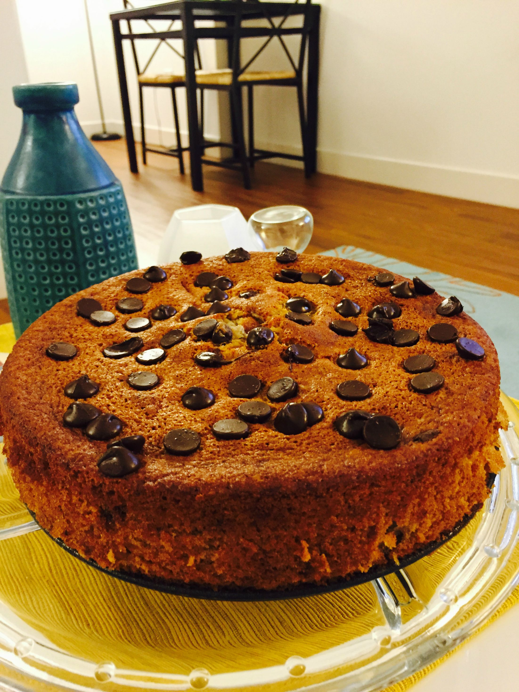
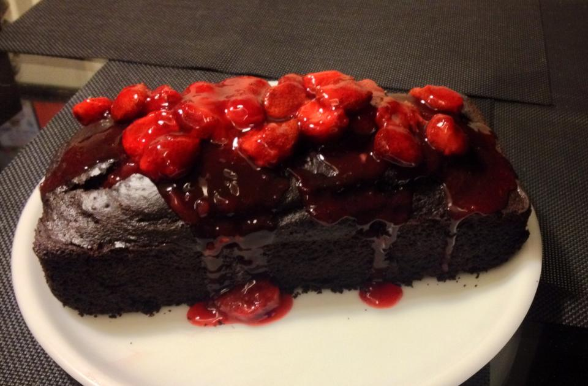
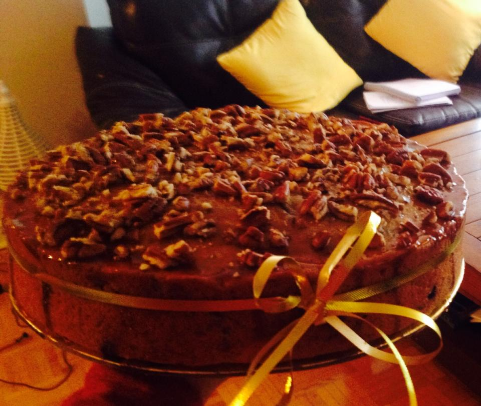

| Banana Bread Cake | Chocolate Strawberry Relish | Apple Cinnamon Cake |
|---|---|---|
Ingredients
|
Ingredients
|
Ingredients
|
|  |  |  |
Here are some of the craziest facts about cakes...
Links on more information about cakes:
Page submitted by Niveta Chowdhry.